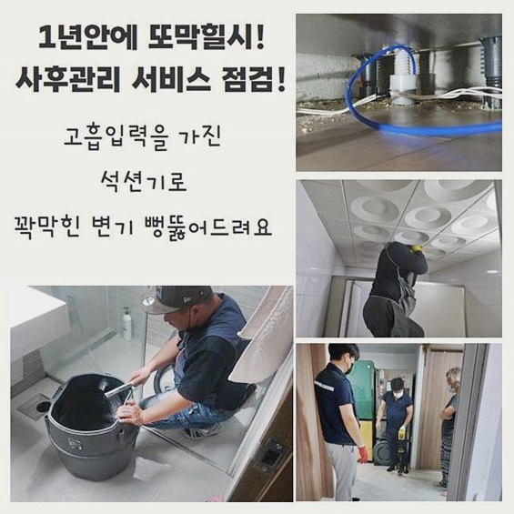
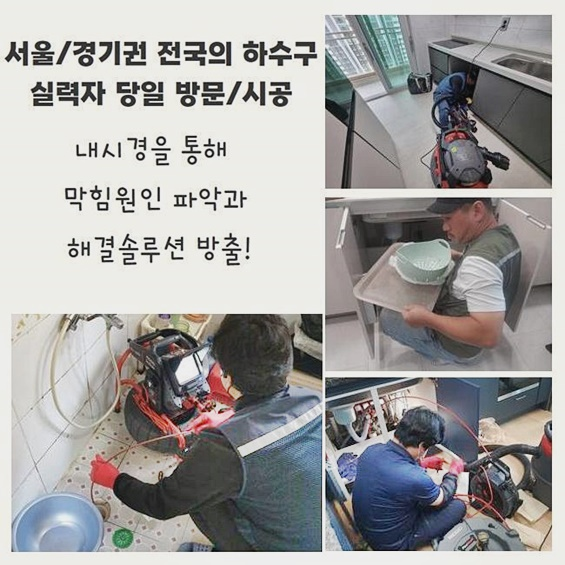
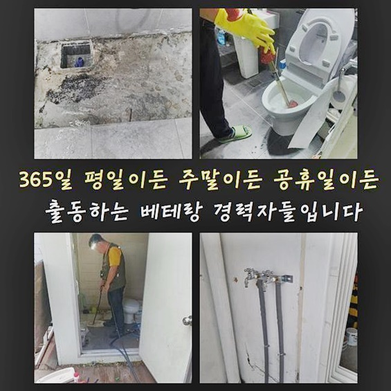
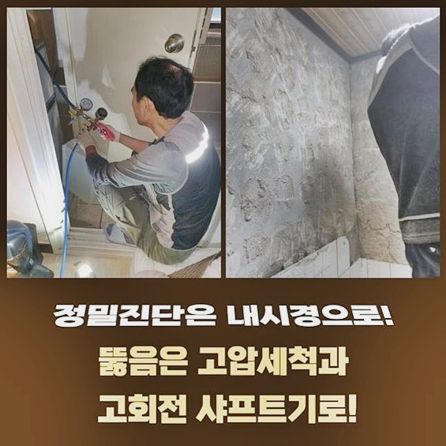
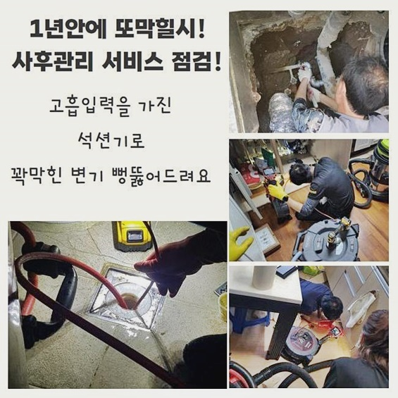
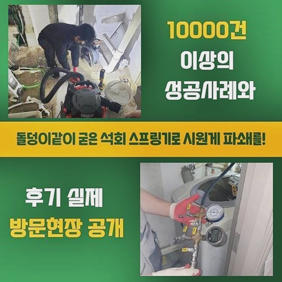

🏠 동작구 흑석동화장실뚫음 신대방동 악취차단 해결방법
용인 싱크대막힘 전문 시공 후기

📋 작업 개요
- 위치: 용인
- 서비스 유형: 싱크대막힘, 하수구막힘, 배관막힘, 누수수리, 역류해결, 뚫는업체, 배관청소, 고압세척, 설비공사, 악취차단
- 작업 일시: 2024. 8. 20. 22:49
- 업체명: 하수구수사대 (010-5615-2118)
🔍 문제 상황
동작구 흑석동화장실뚫음 신대방동 악취차단 해결방법
보통의 집 안에서도 특히나 물의 이용도가 집중된 욕실이나 주방 싱크대는 물이 끊기는 현상도 곤란함을 빚을 수 있지만 이용한 하수의 이동이 주춤대는 상황도 씻고 먹는 기본 행위에 큰 방해 요인이 되는 커다란 사건입니다
오늘 말씀드릴 현장의 경우는 하수구들이 일시에 막힌데다 오염수가 범람하는 사건까지도 다수의 세대에서 발생하는 중이라며 쫓기는 듯 서비스를 맡겨주셨습니다
많은 곳에서 불편함을 미치고 있으니 제일 빠르게 와줄수는 없겠냐고 말씀하셨던 고객님이셔서 날이 바뀌면 빠르게 도달하겠다고 안심시켜드리고 공사에 필요한 도구들을 갖고 곤란을 겪는 건물로 향하여 솔루션을 적용해 드렸습니다
해당 건물과 마찬가지로 공용시설의 오류가 생겼다면 고압세척이 들어가야 할 케이스도 흔히 찾아볼 수 있으므로 출장에 나서기 전에 고압수를 발포하는 도구도 든든하게 마련을 했습니다
갈피를 못잡을 정도로 수많은 업체 중에서 지인이 서비스에 대한 만족도를 내비친 저희에게 믿고 전화했다 하셨네요
고객님과 이런저런 상담 시간을 가볍게 갖고 계획에 도움이 될 수 있는 전문적인 진단을 우선 진행하게 되었습니다
많은 호실 내에서 불편함을 호소하는데다가 자잘한 가지 배관이 아니라 메인 하수구가 막혀버린 곳이라면 심플한 기기로는 아무래도 역부족입니다
예시로는 흡수를 돕는 석션 기계나 고형화된 물질을 회전력으로 파쇄하는 샤프트같은 장치들로 이러한 현상을 조치하는 건 많이 부족할 수 있어요

🔎 원인 분석
💡 전문가 진단: 정밀 진단 장비를 사용하여 슬러지의 고착 여부를 판명하고 타격/세척 작업을 실시했습니다.
전문적인 세척을 통해서 고장이 나버린 하수구 문제를 다루는 것이 합리적인 탈출구가 되어줄 것입니다
배관이 깔려있는 슬라브층을 오픈해서 메인 배관 시스템을 보다 가까이서 진단해 보았어요
관련 시공을 처음 받으셔서 여러 차례 시간을 내어야 하며 과한 공사비가 책정되는 상황은 없는 게 맞냐며 고객님께서 식은땀을 흘리시면서 조심스레 물어보시더라고요!
어떤 문제인지 진득하게 조사해야 확답을 드릴 수 있으나 최대한 늦지 않으면서도 부담이 과중되지 않은 알뜰한 비용으로 보완을 해드리니 걱정 마시라고 장담을 드리면서 시공에 대한 이해도를 높이기 위해서 어떠한 도구들을 통해서 작업을 진척시킬지에 관련한 설명도 덧붙여 드렸습니다
어둡고 기다란 배수관은 다년간의 경력을 보유하고 있다 해도 실제로 실제 눈으로 관찰하기는 여러 제약이 있어서 좁은 관로에도 쑥 들어가서 문제점에 대한 판단을 해주는 첨단 내시경 장비가 역할을 해내줘야 합니다
어떤 오물이 생겨서 막힘이 일어나게 되었고 어떤 부근까지 확장이 되었는지 풀로 검토하기 위하여 진단 기기를 작동시킨 후 관로를 따라 내려보냈습니다
가늠할 수 없는 깊이까지도 촬영기기를 넣어서 현재 상태를 감지해 보았는데 공용 배관으로 쓰는 굵은 관로에 끈적하게 슬러지화된 물질 및 폐기름이 산적한 물질들로 인해 여백없이 채워져서 하수의 정상 경로를 막고 장애물을 만들고 있었습니다
상상 이상으로 부패된 내부 상황을 보여드렸더니 매우 당황하시며 이처럼 거대하게 뭉쳐버린 장애요소가 떡하니 있다는 사실은 정말 의외라고 하셨습니다
축적된지가 오래됐을테니 당연하게 막힐 수 밖엔 없었겠다 하셨고 중요한 시설인데 관리를 외면해온 것 같다며 고백을 해주셨어요!

🔧 작업 과정
저희에게 맡기고 편안하게 대기해 주시기로 결정하셨고 저희는 시공에 들어갈 쪽은 비닐을 넓게 깔아서 보양해주는 준비과정도 거쳤습니다
겉을 감싸주지 않는다면 뚫는 활동을 하면서 더러운 이물이 폭발해서 참기 힘든 구린내를 유발할 수 있으므로 이러한 불상사가 없도록 일어날지도 모를 일말의 가능성이라도 염두에 두고 대처를 해줍니다!
보편적인 배수로들은 줄지어 부착된 형태이므로 긴 파이프의 중앙 지점도 세정을 들어가야 하겠다는 판단을 내리고 나서 관로 탐사기를 틀어서 하수관이 이어진 형상을 추론하는 검사 과정도 철저히 수행하게 됐습니다!
중앙배관은 갈라지는 형태로 수많은 파이프 라인으로 분류가 되는데 한곳만 뚫어준다고 하더라도 다른 세대 내의 하수구에서는 역류가 생기기도 합니다
손길이 닿아야만 하는 섹션들을 빠지지 않고 순차적으로 세정을 거쳐주는 절차에 들어가야 합니다
어떤식으로 접근할지 계획 수립을 완료한 이후에는 배관의 말단에서 강력한 물청소를 해주는 고압세척기로 인한 작업을 이어서 돌입하게 됐습니다
이름처럼 강력한 물살을 분사해서 타겟을 와해시키는 업무이며 속에있는 오염원이 사라질 때까지 반복해서 내부 정돈을 해줘야 한답니다!
여러가지 변수를 종합하여 시간을 추산하게 되지만 보편적으로 오래 걸리는 편입니다
세기를 조절하는 것도 한끗차이로 퀄리티가 달라지는데 만일 세월을 오래 감당한 배관일 경우에는 손상을 감내해야 한다는 위험이 따르죠!
오래된 건물이었음에도 불구하고 전문적인 스케일링을 아예 실시해 본적이 없었던 탓에 누적되어 내시경을 넣자마자 보이는 칙칙한 색감의 하수도는 장기간 침적해온 침전물들이 다량 나타나 있었네요
세척을 하는 도중에도 카메라를 아예 퇴거시키지 않고 지속적으로 배관 컨디션과 오염물의 정리 수준을 살펴보며 세기를 조절해가며 작업을 나아가기 때문에 세척의 과정 중에서 배관에 악영향이나 데미지를 입는 사건이 발생하는 것은 아닌지 걱정은 붙들어매셔도 됩니다
몇 시간의 물길을 확보해 나간 덕에 위생적이고 맑게 변화된 배수관 환경을 정비하게 됐고 기분좋게 마감을 알렸습니다
계속해서 보셨던 고객님 역시 꼼꼼한 수행 내역을 옆에서 보셨기에 장기간 고생 많이 하셨고 냄새까지 다 잡아주셔서 감사하다고 말씀해주셨어요
최종 마무리로 하수관으로 물이 잘 내려가나 검사해보고 유속이 통쾌하게 내려가는지 검사를 마쳤는데 정리를 진행하며 감지해 보았는데 건물 곳곳에 물에 젖은 누수가 일어날 때의 단적인 현상들이 속속들이 나왔기 때문에 안전을 위한 누수보강이 필요하단 점을 전달을 해드리고 점검까지 진행했습니다


✅ 작업 완료
누수되는 측면을 발굴해 보니 설치되어있던 하수구의 겉면에서 눈으로도 식별 가능할정도로 갈라져버린 공금이 가있는 상황이라 이것 또한 빠르게 수습을 해줘야만 하는 상태로 보였습니다
당일은 아무래도 많은 부분이 마비되어 고압세척 단계를 완벽하게 완수하기까지 시간이 매우 늦었기에 연이어 시공하기는 어려웠고 누수 문제를 안고있는 배관 교체는 다음에 괜찮은 시간에 재방문해서 고쳐드리기로 약속을 드리고 끝 인사를 드렸습니다
한 건물을 공유해서 쓰는 공동주택이 대다수이므로 이와 같은 하수도 이슈가 직면해 오게 된다면 근처에 있는 이웃까지도 안타까운 피해를 줄 수 있는 도미노같은 문제가 될 수 있어요
시설물의 오류로 진땀을 흘리신다면 즉각적으로 저희 전문 기술자의 도움을 요청하셔서 취약해진 설비가 제자리를 찾게끔 극복해 보시기 바랍니다!



⚠️ 베란다 누수 및 방수 관리 방법
- ✅ 비가 많이 올 때 창틀 주변이나 아래층 천장에 얼룩이 생기는지 정기적으로 확인해 보세요.
- ✅ 우수관 주변 실리콘 마감이 들뜨거나 깨진 틈새가 있는지 손상 여부를 수시로 체크하세요.
- ✅ 베란다 바닥 타일의 줄눈(메지)이 소실되면 그 틈으로 물이 침투하여 누수가 유발됩니다.
- ✅ 누수 의심 증상 발견 시 방치하면 아래층 손실이 커지므로 즉시 전문가의 진단을 받으십시오.
💡 핵심 정리
- 확실한 장비 작업(내시경 점검 및 샤프트 스케일링)으로 원인을 뿌리 뽑습니다.
- 작업 후 1년 이내에 동일한 부위 재발 시 100% 무상 A/S 서비스를 보장합니다.
- 서울 · 경기 · 인천 전 지역에 24시간 언제든 긴급 출동할 수 있도록 항시 대기 중입니다.
❓ 자주 묻는 질문 (FAQ)
🚨 용인 싱크대막힘 문제로 고민이신가요?
정확한 원인 진단과 확실한 시공으로 재발 없는 해결을 약속드립니다.
24시간 긴급 출동 | 서울 · 경기 · 인천 전지역 | 1년 내 재발 시 무상 A/S